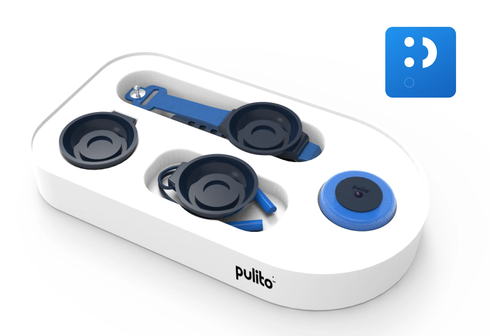
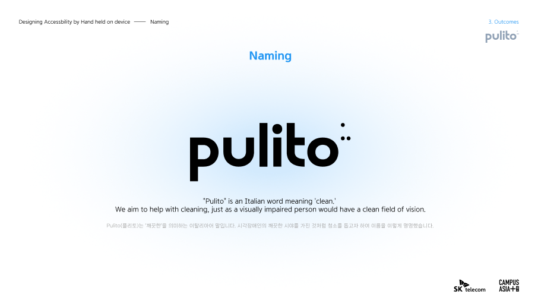
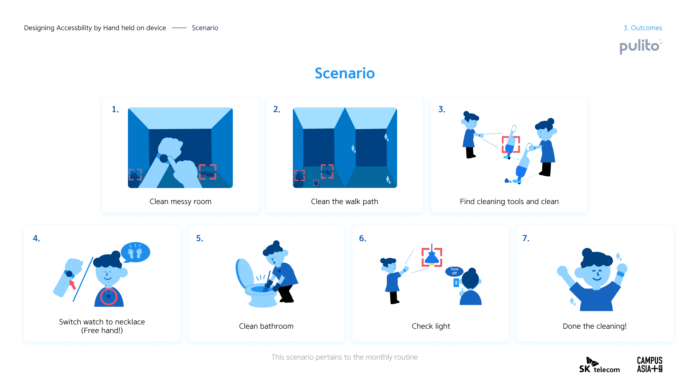
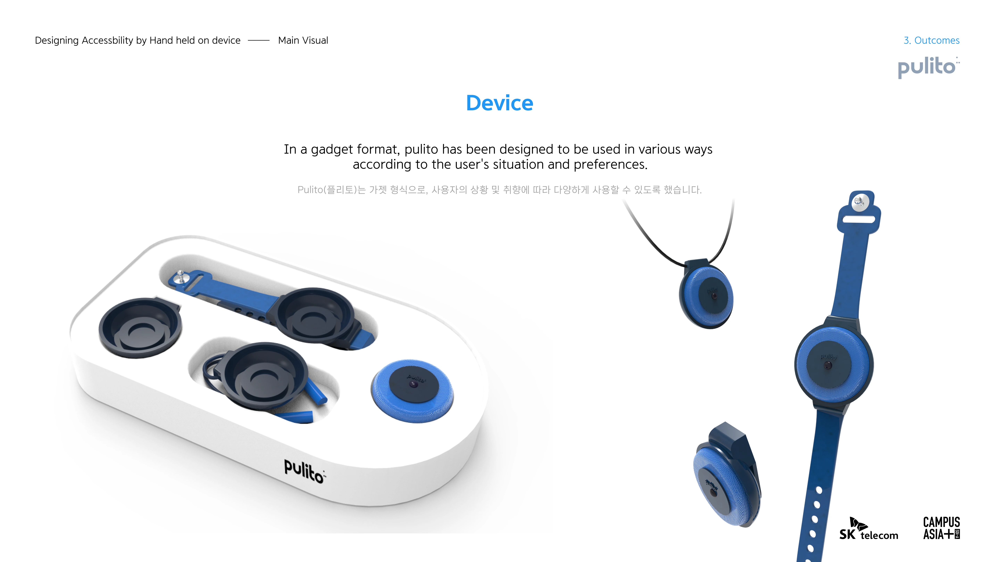

"pulito"——视障人群家务辅助APP设计
结合创意与动效，打造独特的视觉体验。
项目概述
Pulito（意大利语"洁净"）是为视障人群设计的家务辅助系统，通过多模态交互弥补视觉缺失。硬件采用磁吸模块化设计，实现污渍识别、障碍预警、清洁引导三大核心功能，帮助用户重建家务自主权。




用户痛点
清洁盲区识别困难
无法准确识别和定位需要清洁的区域
安全隐患预警缺失
清洁过程中缺乏及时的安全预警机制
工具交互适配不足
传统清洁工具缺乏非视觉交互适配
系统设计
硬件创新
双面摄像头系统
广角障碍探测 + 微距污渍识别
磁吸模块化主机
胸针/腕表/项链三形态
多模态交互
立体声导航
空间建模与环境音频地图
触觉反馈
操作确认与危险预警
语音引导
"灶台清洁五步法"等场景化指令
核心功能
大模型图片污渍定位
AI识别技术精准定位清洁区域
危险因素即时警报
实时监测并预警潜在危险
自适应清洁任务分解
智能分解并引导清洁步骤